小豆島の洞窟寺院も残りあとわずか。
次に訪れた
清滝山で衝撃的な仏堂に出会う。
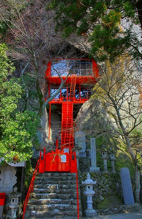
ソレがコレ。
どすか！
この尋常じゃないカッコイイ姿。
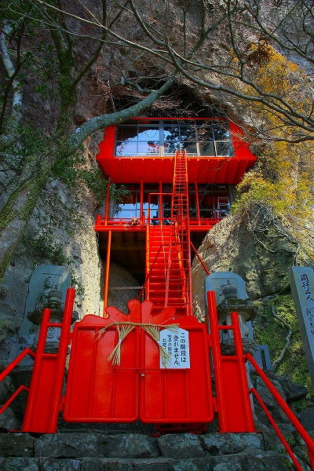
洞窟を塞ぐように作られた朱色の建物はまるで
SF映画の秘密基地のようだ。
お寺の建物であるということ自体にわかに信じられないその雄姿！
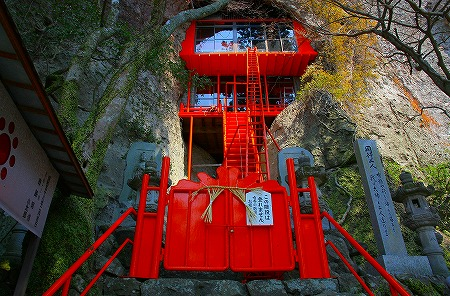
あまりのかっこよさに最早
頭の中は低脳小学男子。
脳内ではサンダーバードのテーマ曲が鳴りまくり（読者貴兄におかれましては
御自身の世代に合わせたアンセムを脳内で鳴らしてみてね）！
申し訳ないがカッコイイ以外の形容詞が浮かばないので連呼させていただきますっ！
ホレ、低脳小学生だから。
カッコイイ！カッコイイ！カッキィィィィィ〜！
この建物を見てピクリとも来ない人におかれましては大変申し訳ありませんが、この後の私の病的なまでのハイテンションっぷりはウザいだけだと思いますので
他の穏やかなページでもご覧下さい。
さて、この建物が大好きな方々だけが残ったという前提でハナシを進めます。
さあ、皆の衆、誰にも遠慮せず大興奮しよう！
カッコイイ！カッコイイ！カッキィィィィィ〜！
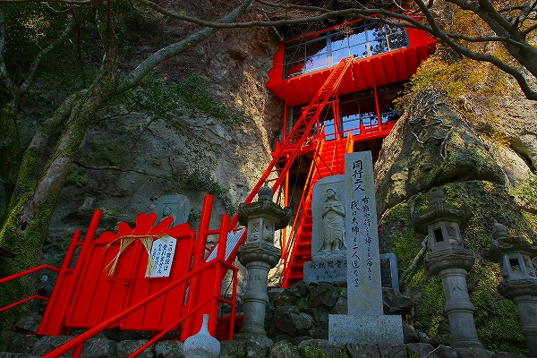
…気を取り直してチョットだけ仕組みを説明しておこう。
外から見ると建物は2階建てのようだ。
1階から地上にはハシゴ階段が、2階には資材運搬用のリフト。
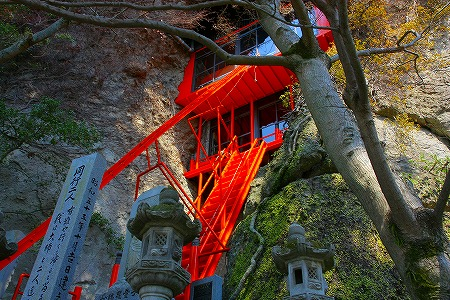
2つのハシゴがより一層
秘密基地感を出していてすごく良いんだなー。
1階と2階の関係性にも注目いただきたい。
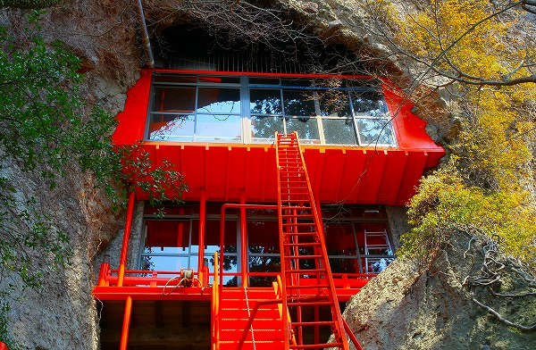
2階が1階よりも前にせり出している。
何だか1階と2階が下にスライドして中からサンダーバード2号が出てきそう
（読者貴兄におかれましては
御自身の世代に合わせた巨大マシンを脳内で出撃させてみてね）。
正面の門には
「この階段は登れません」と書いてある。
恐らくメンテ用か緊急用なのだろう。凄くカッコイイのに残念だ。
いつもだと「アアこの階段登りたかったなー」とかブツブツ言うのだが、これから向かう
「通常の」入り口がこれまた凄いので文句など言えないのである。
このお堂、階段があるのにも関わらず、
わざわざ脇にある洞窟から中に入るシステムなのだ。
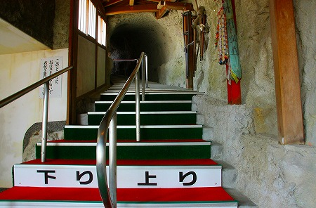
玄関を上がるといきなり洞窟があり、階段が延びている。
洞窟は手掘りなのだろうか。洞窟の中を靴を脱いで歩いていくというのも奇妙な感覚だ。
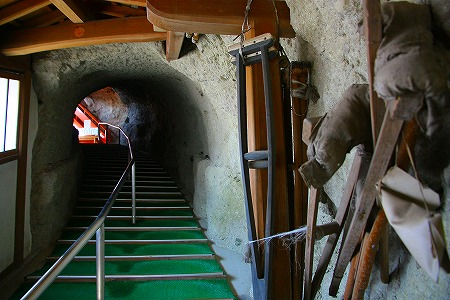
壁には
松葉杖が掲げられていた。
ここに祈願に来て足が治った人が奉納したものなのだろう。
洞窟を抜けると、超カッコイイ堂内に。
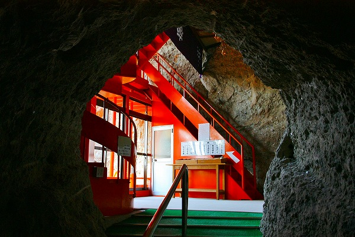
うひょー。
なんだろう、この
モダンデザインと自然の岩窟と仏教の渾然一体具合。
しかもその三者が全く混じり合っていないか、というとそうでもなく、でもばっちりフィットしてるかというとこれまたそうでもない。
お互いがお互いを牽制しあっていると同時にそれぞれが勝手に自己主張している感じ。
いや、実際には鼻水たらしてチョーカッチョイー、とか言ってるだけなんですけどね…。
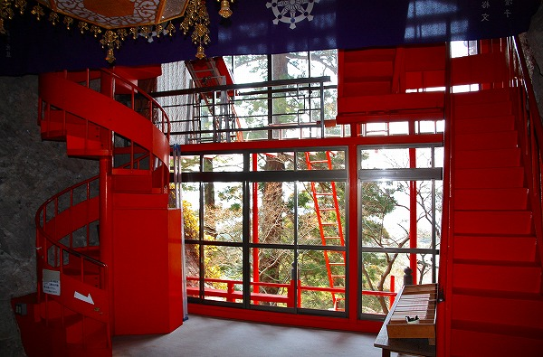
1階の部分。2階に上がる階段が左右に2つある。
洞窟から入って奥、上画像の右手にある折れ階段が上り専用、左手の螺旋階段が下り専用になっている。
先ほどの洞窟内の通路もそうだが、
上りと下りが明確に分離されている。
つまり洞窟と建物を複合的に組み合わせて一方通行の参拝路を設定してあるわけだ。
しかも行きと帰りの階段のデザインを変えたりして（普通同じ形状の階段を使用した方が作るのも楽でしょ）アクセントを加えている。
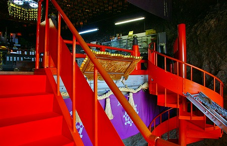
きっと遊び心を持った方が作ったに違いない。
外から見て2階に見えた部分はリフトで運ばれてきた荷物を受け取るだけのスペースだった。
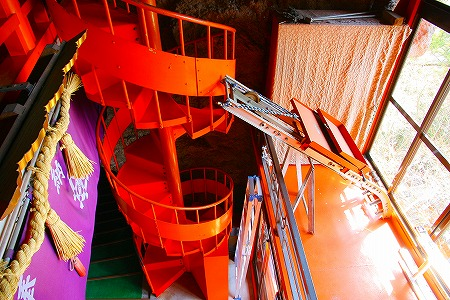
このスペースは上りの折れ階段の踊り場から入るようになっているが、一般の人は入れないようになっている。
窓の下にはハシゴが延びている。
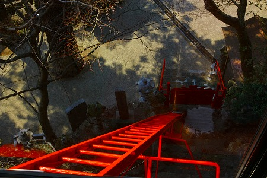
どのくらいの頻度で使うのは判らないが、あまり使っていないような気がするな。
この辺から見たらお寺とは思えないでしょ。
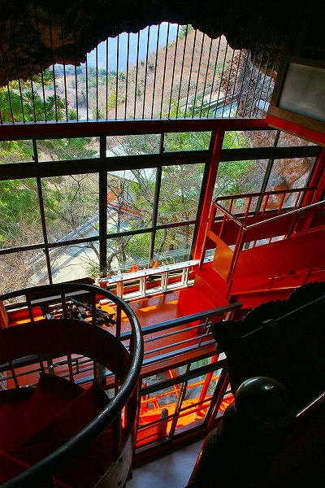
正直言って洞窟自体の規模はこれまで訪れた小豆島の洞窟寺院に比べてもそんなに大きくはない。
なのに行きと帰りの経路を分離したり、必要以上の規模とデザインの覆屋を設置したり。
…つまり過剰な設備投資がなされている訳ですよ。
逆に言えばそれだけの投資が出来るほど訪れる参拝客も多いのだろうし、それだけのご利益もある、ということになろう。
階段を上りきると木造の小さなお堂がほぼ宙吊り状態でパイルダーオンされていた。
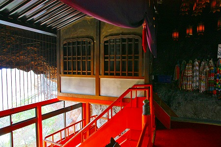
それまでのミッドセンチュリーっぷりはどこへやら。
このフロア（というか元々の洞窟部分）だけは凛とした雰囲気にあふれていた。

洞窟の奥の方に仏像が祀られていたが、そちらはほとんど見てないような気がする。
何やってんだ？と自問自答するも多分
もう一度行ったとしても洞窟の奥は見忘れるような気がしてならない。
それほど建物がかっこよかったっつーことで。
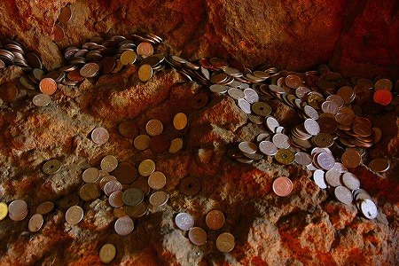
岩肌のあちこちには賽銭が。
帰りは螺旋階段を下りてトンネル状の通路へ戻る。
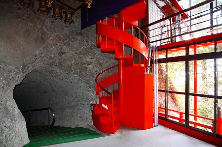
小豆島最高・最大・最尊の霊山だとか。
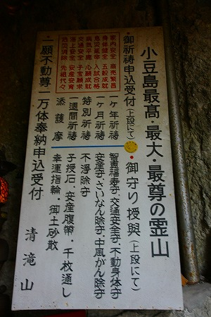
アタシにとっちゃ
小豆島最高にカッコイイ仏堂、でした。
いや、仏堂に関して言えば
今まで見た中でもベスト10に入るカッコよさだった。
寺の隅には巨大な不動明王が鎮座していた。
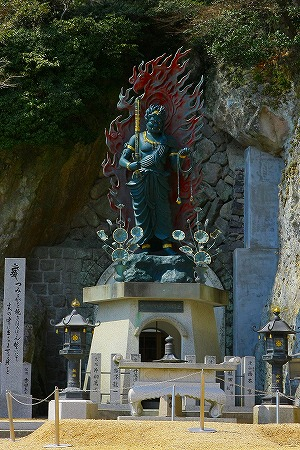
庫裏の裏手は恐ろしいほどの絶壁。
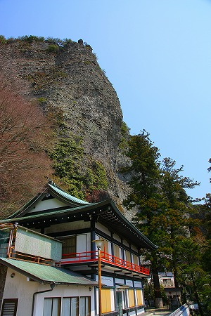
岩壁からは巨大な岩が多数露出している。
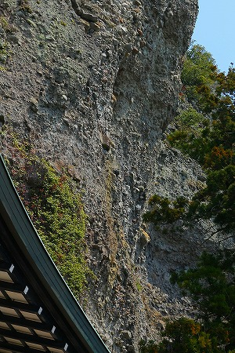
岩とか落ちてこないんだろうか？
大丈夫なんだろうか？
…マジで大丈夫なんだろうか？